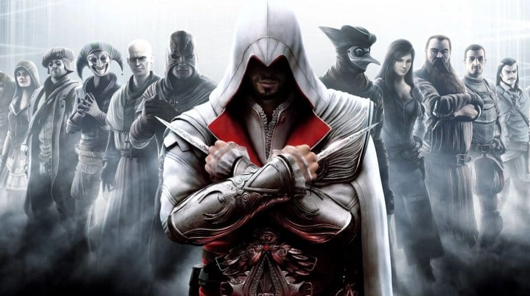

Iniciada com o segundo Assassin's Creed, de 2009, a história de Ezio, nos jogos, passou por Brotherhood, de 2010, e foi concluída em Revelations, de 2011. Naquele mesmo ano, aliás, a animação Embers foi lançada, em que jogadores puderam ver, de fato, os últimos momentos do lendário Auditore. Foi um período que durou por apenas três anos consecutivos, mas marcou para sempre a memória de fãs da franquia Assassin's Creed no mundo inteiro. Aliás, tenha você vivido aquele momento ou não, é muito fácil entender todo esse sucesso. O charme da Itália renascentista idealizada pela Ubisoft, por exemplo, é simplesmente inacreditável. Em mundos abertos que eram, ao mesmo tempo, amplos (quando andávamos longe dos centros) e estreitos (quando passeávamos pela cidade), jogadores eram completamente tomados pela imersão.

Inclusive, o contato constante do jogador com figuras históricas nunca foi tão bem aproveitado quanto nos jogos de Ezio. Leonardo da Vinci era nada menos do que um dos amigos mais próximos do protagonista e, portanto, do jogador. Nicolau Maquiavel, autor de O Príncipe, também estava lá no grupo de Assassinos. Eles não eram apenas NPCs comuns com diálogos ligeiramente mais extensos em relação aos demais NPCs. Não. Da Vinci, por exemplo, tinha todo um arco próprio. Ele criava as próprias situações. Não se tratava apenas de um coadjuvante que esperava o contato de Ezio e ficava sem fazer coisa alguma ou, simplesmente, só participava da história com algumas falas. Justamente por levar o jogador de volta até a Renascença, um período tão celebrado da história humana no Ocidente, e nos entregar as melhores companhias possíveis, os Assassin's Creed protagonizados por Ezio tinham um apelo comercial considerável e sabiam equilibrar uma jogabilidade divertida com uma contextualização fora de série. Por mais que os jogos seguintes tenham tentado replicar essa fórmula — como por meio de Assassin's Creed Odyssey, que é situado na Grécia Antiga, mais um período constantemente exaltado da civilização ocidental —, a mudança completa da jogabilidade e o crescimento do mapa para proporções quase inacreditáveis, com histórias consideravelmente mais genéricas, talvez não tenham sido tão positivos para fãs mais antigos. No meu caso, certamente, não foi. É evidente que, comercialmente, a transição de Assassin's Creed para o modelo atual foi um acerto em cheio da Ubisoft. Valhalla gerou mais dinheiro do que qualquer outro jogo da série. Portanto, dificilmente veremos uma reversão na fórmula do jogo — e é até bom que isso não aconteça. De qualquer forma, e acredito que falo por uma parcela considerável dos fãs mais antigos, aquela era de Assassin's Creed marcada por conspirações políticas que mesclavam o passado e o mundo real, nos enchiam de amigos históricos memoráveis e traziam assassinatos únicos dirigidos de maneira impecável pode até ter se tornado algo do passado, mas continua no topo.